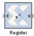

|
|
This block is listed in the following Xilinx Blockset libraries: Basic Elements, Control Logic, Memory, Floating-Point and Index.The Xilinx Register block models a D flip flop-based register, having latency of one sample period.The block has one input port for the data and an optional input reset port. The initial output value is specified by you in the block parameters dialog box (below). Data presented at the input will appear at the output after one sample period. Upon reset, the register assumes the initial value specified in the parameters dialog box.The Register block differs from the Xilinx Delay block by providing an optional reset port and a user specifiable initial value.